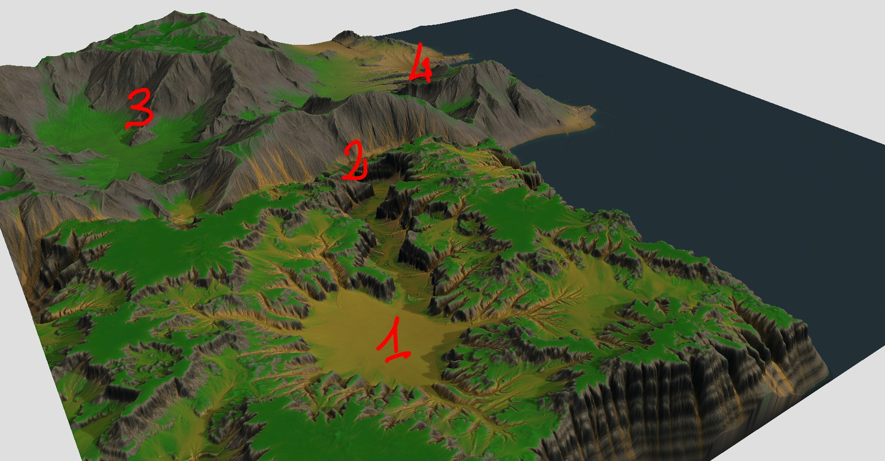

So, we're making a open world game here, so let's begin with getting a world toghether that fits our needs. Based on the idea of the four elements, we knew we had to have 4 zones the player would progress through, and after we charted a small universe bacgkround story we decided on a layout of the map. The software I used to generate the map is World Machine. There are newer and shinier tools but this one fit quite well.
This is the result:
Where the numbers are respectively:
- Earth
- Fire
- Air
- Water


The tool uses a mesh instead of the standard terrain but thankfully automatically creates chunks and LODs for them (they are parametrised).
Terrain Vegetation & Rocks
I've looked for a lazy and easy solution for placing trees an rocks on a mesh and the only viable solution I came up with was using the Polybrush tool for Unity. This approach had two downsides:
- Quite slow: requires to paint different trees and rocks all over the large terrain.
- The result can be good, but it heavily depends on your enviromental artist skills.

I use a curve to describe how likely it is for an object to spawn at increasing altitudes. The slope parameter on the other hand is the maximum slope at which the object can spawn. It's not perfect, but here are the results:


Looking pretty good! It's time to look into some shaders (Disclamer: I'm very new to shaders so my work here is pretty basic). The first one we'll be doing is water, my approach here is basic vertex displacement: luckily Unity has surface shaders to help here. Surface shaders basically handle all the hard stuff for you so you can play around with shaders while still having proper lighting and reflections.
The simplest approach for waves is sine waves so that's what we'll be doing. I modify the position of every vertex on the water plane based on their position multiplied by a sine wave (and a multitude of parameters to help changing the quality of the effect on the material itself). I generated a very simple normal map and added it to the shader and this is our first result:

The waves are animating but it looks a bit boring so I wanted to add something without making the shader very complex. The simplest thing that came up was a foam effect. This could be done better with a texture but I went with a simple color clipping technique. The end result is simple but effective:

Okay looking good! I'll be honest, I got a little bit carried away with vertex displacement shaders and decided to apply it to the trees to give the impression of the wind blowing. It's barely noticable while playing but having it doesn't hurt. This is how it looks like:

I guess it's now time to put it all toghether. I added proper rim lighting, some fog, and some post processing (was alrady there actually) and we get the final result for the Elements terrain and enviroment. Note that when 3D models will be added the terrain could be adjusted and the tree (and rock) placement algorithm could be re-run to get the updated version. Here's some screenshot of the final result: